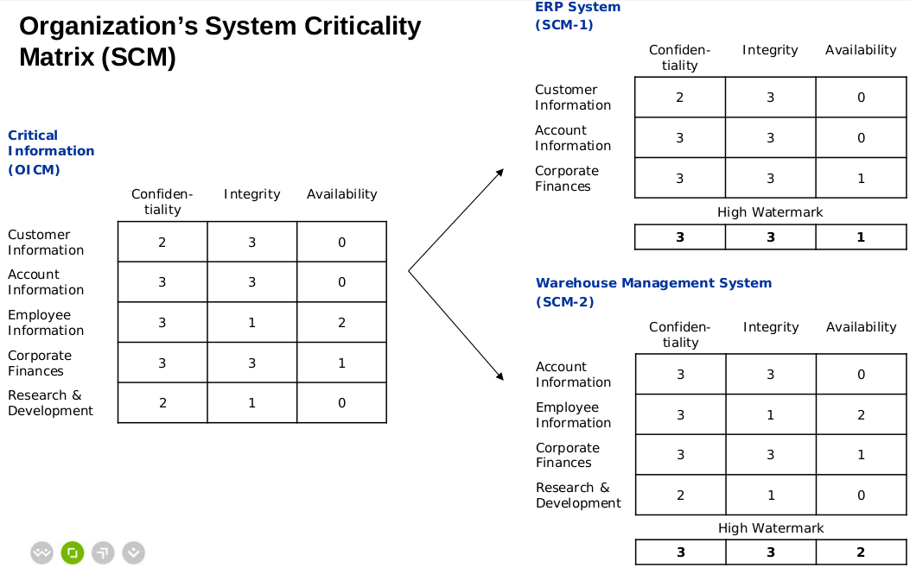
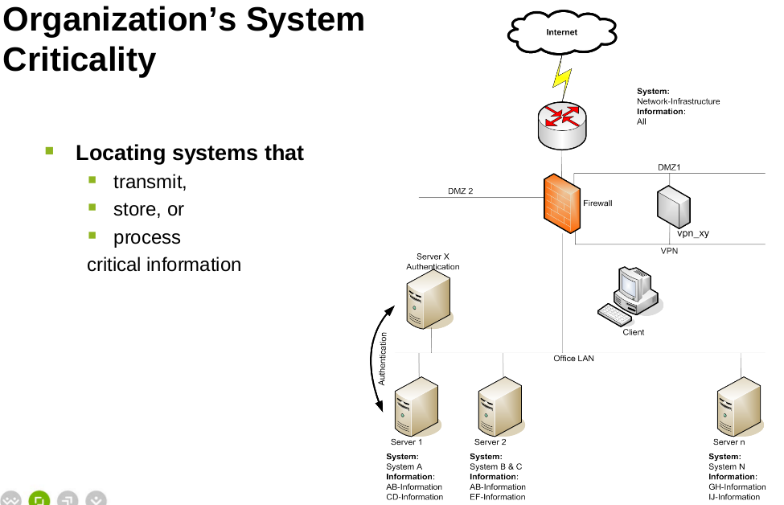
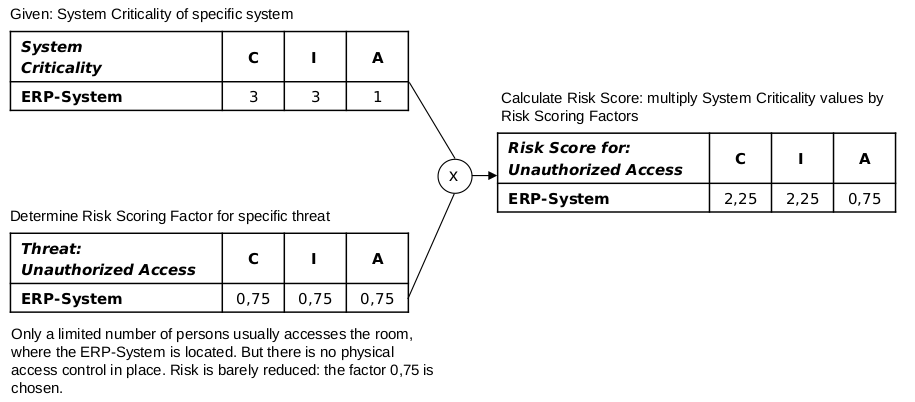
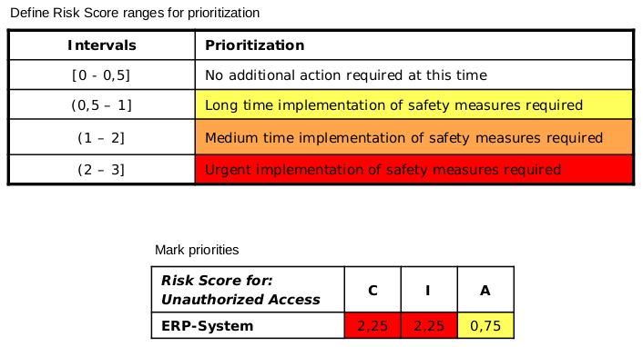
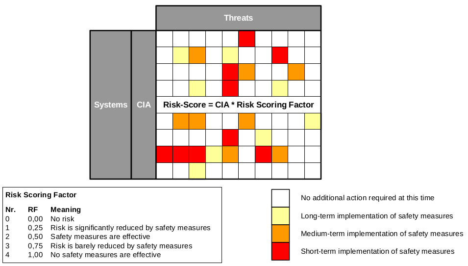
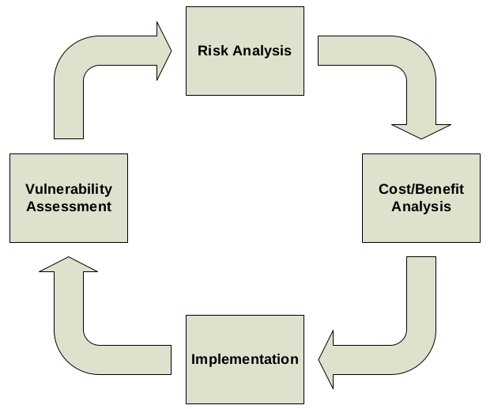

### E-Security 1 - Risikoanalyse #### Wintersemester 2018/2019 FH JOANNEUM
### Wozu Risikoanalyse? - Verständnis für interne Abläufe und Prozesse schaffen -> Transparenz - Sensibilisierung und Bewusstsein für Risiken - Compliance zu Standards (PCI, ISO, ...)
### Was ist ein Risiko? - Ereignis (real oder virtuell) welches Schaden an Unternehmen, Projekt, Produkt oder "Ziel" hervorruft
### Rahmenbedingung für Risikoanalyse - Periodisch oder anlassbezogen (Projekt- oder Unternehmensebene) durchführen - Workshop mit "Keyplayern" - Dauer abhängig von Umfang der Analyse
### Ablauf (1) - Identifikation - Sammeln und Auflisten von Risiken/"Schwachstellen" im Unternehmen - Was kann alles schief gehen? - Interne und externe Beeinflussbarkeit?
### Ablauf (1) - Identifikation - Risiko von/für Umfeld: Welche abhängigen/angrenzenden Projekte werden beeinflusst - Intern: Was passiert wenn Prozesse wegfallen? Mitarbeiter? - Rahmenbedinungen: Finanzierung nicht gesichert? Gesetze ändern sich? - Fehlerhafte Planung: Es werden Arbeitspakete vergessen oder falsch geplant?
### Ablauf (2) - Bewertung - Anwenden von Bewertungschema - Welche Risiken treten mit welcher Wahrscheinlichkeit mit welcher Auswirkung auf? - Vermeiden, Verringern oder Akzeptanz möglich?
### Ablauf (3) - "Behandlung" - Entscheidung wie man mit dem Resultat umgeht - Aussitzen, akzeptieren, lösen oder vermeiden - Auswirkungen auf Unternehmen/Projekt evaluieren
### Risikoanalyse im echten Leben - Ihre Erfahrungen?
### Schritt 1: Klassifizierung von Informationen - Was ist von einem Risiko überhaupt betroffen? - Kritische Informationen im Unternehmen identifizieren - Im ersten Schritt: keine Applikationen! - Einordnen der Erkenntnisse in Kategorien
<table> <thead> <tr><th>Kategorie</th><th>Informations Typ</th></tr> </thead> <tbody> <tr><td>Kundendaten</td><td>Adresse, Telefonnummer, Transaktionen, Finanzdaten</td></tr> <tr><td>Netzwerk und Kommunikation</td><td>Server Konfiguration, Account Informationen, Firewall Konfiguration</td></tr> <tr><td>HR Informationen</td><td>Gehalt, Adresse, Mitarbeiterbewertung</td></tr> </tbody> </table>
### Schritt 2: "Impact" Analyse - Attribute - (C)onfidentiality - (I)ntegrity - (A)vailability - Bewertung - 0 = tolerierbar - 1 = geringer Schaden - 2 = großer Schaden - 3 = starke Gefährdung für das Unternehmen


<img src="images/07_risikoanalyse/cpa_1.png" style="background:none; border:none; box-shadow:none;">
### Schritt 3: (spezifische) Risiken - Naturereignisse / Höhere Gewalt - Menschliche Risiken - Absichtlich: Betrug, Überschätzung, Einbruch/unberechtigter Zutritt - Unabsichtlich: menschliches Versagen - "Risiken von innen": Projektfinanzierung, neue Prioritäten
### Schritt 4: Risiko Bewertung (1) - "Risk Scoring Factor" - Bandbreite: 0 - 1 - 1: maximales Risiko - 0: kein Risiko
### Schritt 4: Risiko Bewertung (2) - Risk Score = System Criticality x Risk Scoring Factor - Beispiel - System: ERP System - Risiko: "Einbruch/unberechtigter Zutritt"
### Schritt 4: Risiko Bewertung (3) 
### Schritt 4: Risiko Bewertung (4) - Unterteilen der "Bandbreite" in Teilschritte - Hervorheben der Prioritäten 

### Schritt 5: Lessons Learned - Risiken priorisieren - höchste Priorität: Kurzfristige Maßnahmen - hohe Priorität: Mittelfristige Maßnahmen - "Quick Win" - Günstige und kurzfristige Maßnahmen identifizieren
### Risiken entschärfen - Akzeptieren/annehmen - Risiko auf niedrigeres Level herabstufen - Risiko vermeiden - Risiko (und Auswirkung) limitieren (CC, FW, Patchmanagement,...) - Planen für den Ernstfall (IRP) - Risiko übertragen (Versicherung)
### Kosten / Nutzen abwägen - oftmals Management Entscheidung (nicht Projektteam) - Kann sein: - Änderung in Prozess - Anschaffung von HW/SW - Kosten für zusätzliche Mitarbeiter - Kosten für Schulungen - ...
### Information Security Life Cycle 
### Business Continuity Planning (BCP) - BCP vs. Incident Response Plan? - Vorher: Business Impact Analysis (BIA)
### Business Impact Analysis (BIA) - Maximal tolerierbare Ausfall(zeit) pro Business Prozess - Methoden: - Interview Mitarbeiter - Sammeln und auswerten von historischen Daten
### Recovery - Hot side: Gebäude mit Daten und Arbeitsplätze - Warm side: Gebäude und Arbeitsplätze - Cold side: Gebäude
### Incident Response Plan (1) - Wer macht was wann im Fall des Falles - OCD - Verschiedene Teams mit verschiedenen Zuständigkeiten - Prozess In/Output und Übergabe
### Incident Response Plan (2) - eingehende Alarmmeldung - externe/interne Quellen - Erstanalyse durch OCD
### Incident Response Plan (3) - Entscheidung über Incident oder "false positive" - Information an Support Team - Schwerwiegender Vorfall: Information an Kunden
### Incident Response Plan (4) - Lösungsfindung - Zuziehen externer Spezialisten - Kontinuierliche Updates an übriges Team
### Incident Response Plan (5) - Gutmeldung an Support Team (an Kunden) und intern - Dokumentation aller Kommunikation, Schritte und Dauer - Lessons Learned
### Incident Response Plan (6) - Handbuch, Telefonnummern, Gedruckte Dokumente, ...
### E-Security 1 - Risikoanalyse #### Wintersemester 2018/2019 FH JOANNEUM
### Quellenverzeichnis - https://methodenpool.salzburgresearch.at/methode/risikoanalyse-2/#tab-EinsatzundNutzen - E-Security Unterlagen - Prof.(FH) DI Ewald Graif - IRP vs. BCP - https://www.luc.edu/environmentalservices/continuityofoperationsplans/emer_res_bus_con.shtml